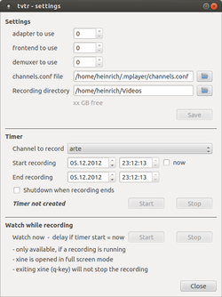
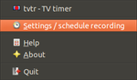

tvtr TV Timer
Dieser Artikel wurde für die folgenden Ubuntu-Versionen getestet:
Ubuntu 14.04 Trusty Tahr
Zum Verständnis dieses Artikels sind folgende Seiten hilfreich:
tvtr - TV Timer  ist ein kleines in QT geschriebenes Programm für das System-Tray, mit dem DVB-Aufnahmen programmiert werden können. Zum Einsatz kommt dabei gnuTV aus dem Paket dvb-apps, es benötigt entsprechend eine channels.conf für die Sendereinstellung. Vom Entwickler für DVB-S (Satellitenfernsehen) konzipiert, kann es aber auch für DVB-T oder DVB-C verwendet werde. Zum optionalen Abspielen schon während der Aufnahme ist XINE vorgesehen.
ist ein kleines in QT geschriebenes Programm für das System-Tray, mit dem DVB-Aufnahmen programmiert werden können. Zum Einsatz kommt dabei gnuTV aus dem Paket dvb-apps, es benötigt entsprechend eine channels.conf für die Sendereinstellung. Vom Entwickler für DVB-S (Satellitenfernsehen) konzipiert, kann es aber auch für DVB-T oder DVB-C verwendet werde. Zum optionalen Abspielen schon während der Aufnahme ist XINE vorgesehen.
Installation¶
Das Programm ist nicht in den Quellen vorhanden, es muss selbst aus dem Quellcode übersetzt und installiert werden. Zum Einsatz kommt dafür CMake. Das Quellcode-Archiv von der Projektseite herunterladen, entpacken[1] und kompilieren[2]. Benötigt wird eine QT-Installation, außerdem die Pakete[3]
cmake
dvb-apps
xine (optional, zur Wiedergabe während der Aufzeichnung)
 mit apturl
mit apturl
Paketliste zum Kopieren:
sudo apt-get install cmake dvb-apps xine
sudo aptitude install cmake dvb-apps xine

Konfiguration¶
Gestartet wird tvtr über den Startereintrag oder im im Terminal [4], wer es immer zur Hand haben will, sollte es mit in den Autostart[5] aufnehmen. Im Systray (unter Unity muss es ggf. in eine Whitelist aufgenommen werden) erscheint zunächst nur ein kleines weißes Quadrat. Beim ersten Start erfolgt ggf. zunächst eine Warnung, dass kein channels.conf gefunden wurde; die Einstellungen dazu erfolgen im "Settings"-Menü. Dort können die Abgaben für die zu verwendende Karte ("adapter, frontend, demuxer to use") eingestellt werden, zu finden unter /dev/dvb/adapterX, bei nur einer Karte ist 0 der richtige Eintrag. Außerdem muss die zu verwendende channels.conf angegeben werden, sowie das Verzeichnis, in dem die Aufnahmen abgelegt werden soll ("Recording directory"). Die Ausgabe darunter zum freien Speicherplatz ist leider noch nicht implementiert, also selbst darauf achten, dass genügend Platz für die Aufnahme zur Verfügung steht!
Automatisches Herunterfahren¶
tvtr bietet theoretisch die Möglichkeit, den Rechner nach der Aufnahme herunterzufahren. Es wird sudo shutdown -h now verwendet, allerdings muss sudo[6] zunächst so eingestellt werden, dass der Benutzer den Befehl shutdown ohne Passwortabfrage verwenden kann. Dazu wird zunächst eine Gruppe[7] powerdev benötigt, zu der alle Benutzer, die tvtr verwenden sollen, hinzugefügt werden. Dann muss /etc/sudoers entsprechend angepasst/erstellt werden, indem man die Zeile
%powerdev ALL= NOPASSWD: /sbin/shutdown
hinzufügt (Editor[8] mit Rootrechen erforderlich). So können dann alle Gruppenmitglieder der Gruppe powerdev den Rechner ohne Abfrage des Root-Passwortes herunterfahren.

Bedienung¶
Mit einem  auf das Tray-Icon öffnet sich ein Dropdown-Menü, über das der Einstellungsdialog (er öffnet sich auch beim Start des Programms automatisch) erreichbar wird. Unter "Timer" wird der Sender ("Channel to record") eingestellt, alle in der channels.conf aufgeführten Sender lassen sich verwenden. Dann das Datum für die Aufnahme, sowie die Start und Endzeit angeben. Sofortaufnahmen sind ebenfalls möglich; dazu Checkbox "now" aktivieren. Nach dem Start verändert sich das Tray-Icon in eine kleine Uhr, bei Aufnahmestart dann in einen roten Punkt. Die Aufnahme selbst wird als rec0.ts im angegebene Verzeichnis abgelegt, für weiter Aufnahmen wird dann hochgezählt. Eine aussagekräftigere Benennung z.B. nach Sender, Datum und Uhrzeit ist leider momentan nicht vorgesehen.
auf das Tray-Icon öffnet sich ein Dropdown-Menü, über das der Einstellungsdialog (er öffnet sich auch beim Start des Programms automatisch) erreichbar wird. Unter "Timer" wird der Sender ("Channel to record") eingestellt, alle in der channels.conf aufgeführten Sender lassen sich verwenden. Dann das Datum für die Aufnahme, sowie die Start und Endzeit angeben. Sofortaufnahmen sind ebenfalls möglich; dazu Checkbox "now" aktivieren. Nach dem Start verändert sich das Tray-Icon in eine kleine Uhr, bei Aufnahmestart dann in einen roten Punkt. Die Aufnahme selbst wird als rec0.ts im angegebene Verzeichnis abgelegt, für weiter Aufnahmen wird dann hochgezählt. Eine aussagekräftigere Benennung z.B. nach Sender, Datum und Uhrzeit ist leider momentan nicht vorgesehen.
tvtr lässt immer nur eine Programmierung zur Zeit zu, es kann aber in mehreren Instanzen gestartet werden. Eine Überprüfung auf Überschneidungen der Aufnahmezeiten findet aber nicht statt, dort also sehr sorgsam programmieren!
Direkte Wiedergabe¶
Um schon während der Aufnahme mitschauen zu können (auch als "Timeshift" verwendbar), kann im Dialog xine gestartet werden. Bei Sofortaufnahmen ist das allerdings erst etwas verzögert möglich. Die Option ist zudem nur vorhanden, wenn die Aufnahme bereits läuft. Xine wird im Vollbildmodus gestartet, und endet, wenn die Aufnahme vollständig abgespielt ist. Ein vorheriges Beenden des Players ist gefahrlos möglich und hat keinen Einfluss auf die Aufnahmefunktion selbst, die komplett über gnuTV abgewickelt wird.
Probleme und Lösungen¶
Ggf. lassen sich die Einträge aus der Dropdown-Liste im Tray nicht immer bedienen, auch ein gleichzeitiger Aufruf z.B. der Hilfefunktion (in Englisch) und des Einstellungsmenüs ist nicht möglich. Ggf. hilft ein Neustart des Programmes.
Umlaute, Leerstellen und Sonderzeichen in den Sendernamen der channels.conf können zu Problemen führen, diese also bei Bedarf entfernen!
Alternativen¶
SimplePVR - Ein Plugin für den TV-Browser mit wesentlich komfortablerer Bedienung (einfachste Programmierung aus TV-Browser heraus, automatische Überprüfung von Überschneidungen etc.)
Skripte/DVB-T-Aufnahmen aus dem TV-Browser starten - Vorläufer für SimplePVR, auch zum "Zappen" geeignet
Skripte/TV-Skript - selbst konfigurierbare Skriptlösung mit aussagekräftigeren Namen für die Aufnahmen.
 - Übersichtsartikel zu Fernsehprogrammen
- Übersichtsartikel zu Fernsehprogrammen- Erstellt mit Inyoka
-
 2004 – 2017 ubuntuusers.de • Einige Rechte vorbehalten
2004 – 2017 ubuntuusers.de • Einige Rechte vorbehalten
Lizenz • Kontakt • Datenschutz • Impressum • Serverstatus -
Serverhousing gespendet von